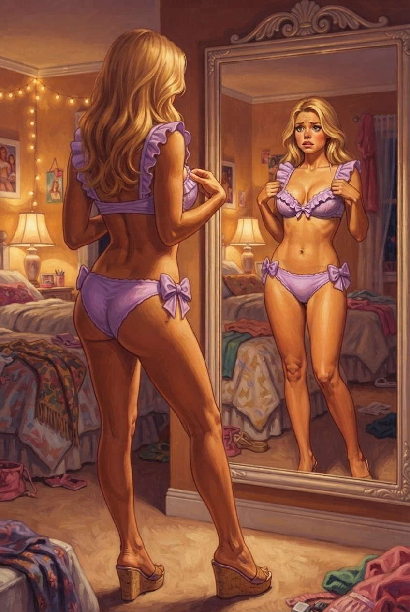
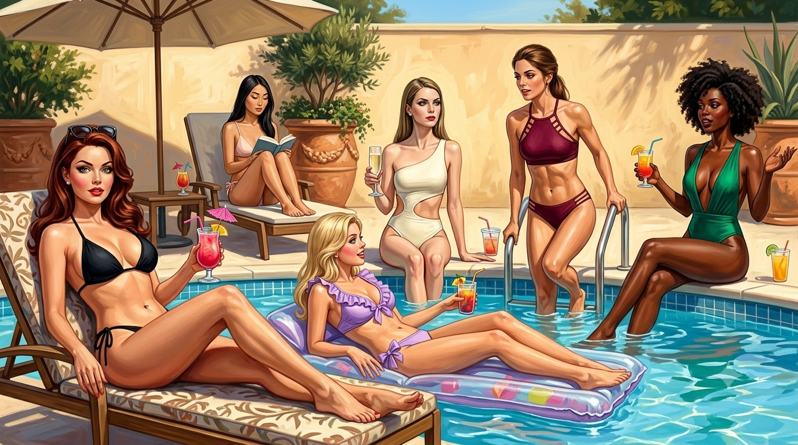

The slumber party had given them a language and a promise. The days after gave them nothing to use it on.
They’d looked. God, they’d looked. Charlie spent those days with his eyes doing two jobs at once, the way his hands had learned to, the surface of him following Connie's narration and selecting the right undies and accessories and taking the small trained bites, while underneath, every waking second, the other Charlie ran the route. He had the whole house in his head now, or what they'd been allowed to see of it, assembled tile by tile across a dozen nights of signing in the dark. The bedroom, the soft carpeted hall with the pressed-flower print, the lounge, the mirrored exercise room, the dining room, the bathroom with the latching stalls. The recording studio where they took Jay. The court they'd built for Porter. All of it a loop. A closed loop, every door in it leading to another door in it, the whole thing folding back on itself like a thing designed by someone who had thought very carefully about exactly this.
So they signed to each other about how the windows were all fake, sealed glass with lit photos of landscapes just beyond them. They signed about the heavy door at the end of the back hall that none of them had been past and none of them could get to unsupervised. Peter signed a long careful map of the route from his indoor practice field and then signed, at the end of it, the small flat gesture they used for dead end, because every branch of it died against a locked door or a watching camera or a hallway that only went deeper in.
Night after night their hands moved and built the same thing they'd built the night before: a perfect map of a sealed box, with a hole in the middle of it where the exit should be, and no way to get to the hole.
It wore on them. Charlie could feel it wearing on them, could read it in the signing itself, which got sharper and shorter as the days went, the careful fluent grammar of the slumber party hardening into something clipped and frustrated. Jay's hands got fast and bitter. Hal signed less and less, and what he signed was mostly the flat downward press for dead end, over and over. Even Porter, who Charlie had never once seen frustrated, had started signing back at people a small impatient I know, I know, we've done this, the closest thing to temper Charlie had ever seen off him.
It was Jay who broke things open, and he broke it accidentally.
It was an ordinary afternoon in the lounge. Connie had them arranged on the dusty-rose sofa with a velvet tray of costume jewelry between them, walking them through which earring went with which neckline and why, the way you'd build any vocabulary, one piece at a time. Charlie was holding a drop earring up to the side of his own face the way she'd shown him when Jay set a pair of studs back down on the velvet and looked up at Connie with the big warm face and said, light, joking, "Yeah, nah, this is calm, innit? But you could just let us out. Save us the lesson."
He said it the way you'd say it to a teacher you didn’t respect. A throwaway. A bit. Charlie didn't even look up, because it was the kind of thing one of them said two or three times a day now, the small mutinous joke that cost nothing and meant nothing because the answer was always the same gentle nothing.
Except Connie put down the necklace she’d been showing them and looked at Jay, and her face did something warm and considering, and she said, "Do you know, that's a wonderful idea."
“What?” Porter asked.
"You're starting to look a bit pale, all of you," Connie went on. "Cooped up in here. It isn't healthy, all this indoors. You want some sun on you."
And Charlie, before he could stop the bright voice, laughed. It came out of him on its own, a small disbelieving huff of a laugh, because of all the things she could have said. "Omigod, pale? Connie, no, like —" He held up his own bare forearm, turned it over in the warm lamplight, the smooth gold of it, the permanent sun-warmed tan they'd given him weeks ago and sealed in for good, the tan that hadn't moved a single shade through six weeks of fluorescent rooms and dim lamps and not one minute of actual daylight. "We're literally the same color we've been the whole time. None of us has seen the sun since, like, ever, and look. It doesn't even do anything. I'm permanently this. It's so weird, it's like a setting."
"Even so," Connie said, not to be argued out of a thing she'd decided to be concerned about.
Jay was staring at her. He'd gone still on the sofa, the joke dead in his mouth, because she wasn't supposed to agree. "Wait," he said. "Wait, you're — really?"
"I think a pool day," Connie said. "Oh, that's exactly the thing. A proper pool day. Sun, and a bit of swimming, and something cold to drink, and music — every girl needs a pool day in the summer, it's part of the whole — it's part of being girls together." She was already gone, already planning it, the same warm runaway certainty that had produced the slumber party. "I'll sort out the swimsuits and pick a day. Leave it to me."
"Uh — no," said Peter, from the end of the sofa, because the word swimsuits had landed in the room like a dropped plate and every one of them had heard it land. "No, on second thought — that's — you know what, we're fine. We're not even that pale. We're good in here."
But Connie was already past hearing it. "It'll be lovely," she said, picking the necklace back up, settling in, decided. "You'll see."
And that was that. Jay looked at Charlie across the sofa, and Charlie looked back at Jay, and neither of them dared sign anything with Connie's eyes right there, but they didn't need to. The same thought went between them in a plain look, no grammar required: what did we just do.
She gave them two days. The swimsuits arrived on the third.
Charlie was at the vanity when Connie entered, most of the way through his morning face, the tinted moisturizer worked in and the lip balm on and his hand moving the small brush of approved blush along the top of his cheek the way she'd shown him, building color the way you build anything, one stroke at a time. The others were scattered through their getting-ready, Hal half into a sundress, Jay still in the short nightgown working a comb through the great cloud of his hair, Austin already finished and quietly perfect in the corner.
The door opened and Connie came in with her arms full. A tangle of bright fabric, scraps of it, more color than cloth, and she came in beaming.
"Pool day, my dears," she sang, and started handing them out.
Charlie watched her go around the room, watched the fabric land bed by bed, and watched the room react. There wasn't much to any of them. That was the thing his eye kept catching as she distributed them: how little there was. She put a deep emerald thing into Jay's hands, a single piece by the look of it but cut so low down the front it was hardly a front at all, and Jay held it up by the straps and his face went slack with horror. She gave Peter something in a wine-dark red, two pieces, strapped and crossed and cut high at the hip, and Peter held it at arm's length like it might go off. She handed Porter a white one-piece that was somehow more naked than a two-piece, a single sheet of it slashed open down the side and across the belly.
She came to Charlie last, and put his into his hands, and he looked down at it.
It weighed nothing. That was the first thing he noticed: a garment for his whole body that he could ball up in one fist, a few scraps of lilac, the color of a thing you'd put on a child. It unfolded into less than he'd thought it could be: two pieces, a top and a bottom, and the top was a little structured thing edged all around in a frill of the same lilac, ruffled at the bust, with a small bow set dead center between the cups, and the bottom was a low-slung scrap tied at each hip with another bow, two more places for a hand to undo him. He held it up by the straps and it hung there, a confection, a thing made of ruffle and bow and the absolute minimum of fabric in between, and the leftover voice in him looked at it before he could stop her: okay that is SO cute, the little bows, omigod. He put it down on the bed like it had bitten him.
"That one's just darling," Connie said, pleased, watching his face. "It'll suit you. Go on, then, all of you. Pop them on. I'll be back in five minutes to take you down."
She left, and they sat for a second in the silence, six people holding fistfuls of bright nothing.
No, Hal signed, flat and final, holding a black scrap in the other hand. His face had gone through the sweetness into something raw. No. Absolutely not. I am not.
Jay just held the emerald thing up so they could all see it and made a small violent gesture at it, his whole opinion of it, and Peter signed something fast and bitter back, and across the room Austin had already turned to face the wall and started, quietly, to change.
Charlie stood and held his and felt the familiar lurch and knew there was no version of the next five minutes where he didn't put it on, the same as there'd been no version without the nighties, the same as there'd been no version without the bra, the heels, the dresses, any of it. He could put it on now and be ready when she came, or he could not put it on and have her stand there and watch him put it on, which was worse. He'd learned the math of this place. There was the heel or there was worse.
He took off the morning's sundress and stood in his underwear in the lamp-warm room, and he unhooked the bra he no longer thought about and set it on the bed, and he picked up the lilac top.
He'd done this enough times now — put their clothing on his body — that he'd thought there was nothing left to surprise him. Turns out there was. The top went on like nothing he owned, two thin triangles and some straps, and he reached behind himself and closed the clasp at his back and reached up to adjust the straps on his shoulders, and the ruffled cups settled over his breasts, and that was the surprise: how little it did. The bra held. The bra had become a thing his body lived inside, a structure, a fact, the breasts contained and lifted and managed by it every day so completely that he'd stopped feeling their weight as weight. This held nothing. Two scraps of fabric lay over them and the rest of them was just there, loose, present, the full soft weight of each breast his to carry unsupported, swaying slightly when he turned to reach for the bottoms, the cool air of the room moving over the bare top and sides and underside of them where no air had touched in weeks. He felt every ounce of what they'd built onto his chest, all at once.
He stepped into the bottoms and drew them up over the rounded hips, the high-cut briefs sitting low and snug, the little bows at each side, and there was so much of him left out. His whole midsection bare, the soft inward curve of the waist they'd nipped in, the swell below it, the long smooth legs all the way up. The not-much-fabric of it made him aware of every inch it wasn't covering, his skin reporting in from everywhere, exposed, exposed, exposed, a body built to be looked at, dressed now in the smallest possible argument for looking.
He caught himself in the mirror. A golden girl looked back. Blonde hair tumbling loose over bare shoulders, the lilac bright against tan skin, the soft inward curve of the waist, the long brown legs going on and on, the little triangles and the little bows holding it all in a state of permanent near-collapse. And the worst of it was that she looked delighted to be there, that the body wore the suit like a dare it had happily taken, hip cocked, chin up, every line of her arranged for the pleasure of whoever was looking.
She wasn't dressed for swimming. She was dressed to be seen in, to be photographed and wanted in, an outfit whose only function was to put the body that Cade had built her into on open display. He felt the exposure crawl over his bare stomach and his bare hips and the long bareness of his legs.
The frill drew the eye straight to the chest and the chest needed no help being drawn to, full and high and barely held, the cleavage a soft deep line the top did nothing to close. He turned a little and the curve of his ass came round in the mirror, round and bare and pert above the long line of his thigh, the bow at his hip riding the swell of it.
{kind=link}

There was more of him out than in. That was the only way he could think it. The slumber-party nightie had at least pretended to be a garment, had covered him in sheer pink to the hip even as it hid nothing. This didn't pretend. This was a frame, a bracket of ruffle and bow set around the maximum possible amount of him, and what it framed was on show, all of it, the curves and the skin and the soft golden length of him laid open to the light and to whoever stood in it.
Around the room the others had got there too. Jay stood in the emerald one-piece with the great cloud of his hair down around his shoulders and his arms wrapped around himself, the deep cut of the front showing a long line of brown skin down the center of him, and his face was set in a furious shamed scowl that the suit made somehow worse, sweet against bitter. Porter, by the wall in the slashed white one-piece, the body bared down the side and across the belly, wasn't covering himself at all, his arms loose.
And then there was Hal, and Charlie's eye went to him and snagged the way it wasn't supposed to. The black bikini was barely there, two small triangles and a knot of string at each hip, and the body underneath it stopped you. They'd built Hal for this exact suit, for a deck and a sun and a pool, the auburn hair falling in a heavy wave to the curve of his breasts, the long legs, the chest the suit was hardly pretending to hold, every line of him pitched a half-degree past what a body needed to be and into what a body was put on a poster to be. And he stood there knowing it, arms crossed hard over the little black triangles, green eyes promising murder, the sweetheart face and the bombshell body and the venom behind both of them with nowhere to go, all that loaded honey and no way to make a single person in the room see anything but a knockout in a bikini being a bit of a sulk.
I hate this, Charlie signed, one-handed, the other arm locked across his chest, because somebody had to say it.
We all do, Porter signed back.
They tiptoed on their wrecked feet to the rack, looking for shoes that went with swimwear and could be worn to a pool party, and Charlie knew what he was looking for before he saw them. A month ago it would have been a blur of women's shoes. Now Connie's afternoons surfaced unasked, and his hand went past the high wedges to the low cork-soled slides that read as pool, as resort, the right ones for the occasion, and he knew that they were the right ones, and hated that he knew. Around him the others were doing the same, trained hands going to the correct things, all of them fluent now in a language none of them had wanted to learn.
The door opened and Connie came in, and her whole face went soft and delighted at the sight of them.
"Oh," she said, "oh, look at you. Aren't you a picture." She pressed her hands together under her chin. "Come along, then. Stay together."
She took them a way they had never been.
Charlie clocked it the second they left the bedroom, because he had the map in his head and this wasn't on it. She took them through the lounge, and to the far wall of it, to a door Charlie had catalogued on the very first day and filed under locked, because it had always been locked, a plain door in the corner past the shelf of pastel paperbacks that did not open and that they had all quietly stopped trying.
It opened now. Connie had a small key on a ring and she fitted it and turned it and the door swung in on a hallway none of them had ever seen.
Charlie felt the whole row of them sharpen behind him. Six people walking in summer nothing, and every one of them, he knew without looking, had just started counting. A new hallway. A new hallway. The first new ground in weeks. He kept his face on nothing and his eyes moving, taking it: plainer than the soft inside halls, less staged, a working corridor, two more doors off it, both shut. Connie led them down it, around a corner, down a second stretch, and there was light at the end of it. Not the warm fake lamplight of the inside. Real light, white and flat and bright, the kind of bright that came from one source ninety million miles away, spilling in through an open doorway at the end of the hall, and the air coming back up the corridor toward them was warm, actually warm, and smelled of chlorine and hot stone and something green and growing.
Charlie had not been outdoors in — he didn't have the number anymore, the count had come apart somewhere in the Goo-haze weeks and never recovered — but his body knew to the cell how long it had been since the sun was on it, and when he reached the door he stood in the frame and could not make his feet move into it.
It was enormous. That was what he’d somehow forgotten: the size of the outside, the sky going up and up with nothing capping it, the air moving, actually moving, against his bare arms and legs, warm and then cool where a little wind crossed it. Walls had been the whole world for so long that the blue overhead read as almost violent, too much, a color turned past where colors were supposed to stop, and under it a real lawn, real green, and a long rectangle of water throwing white coins of light up onto everything, and the smell coming off all of it, cut grass and chlorine and hot stone and underneath it something green and living and free. There were cushioned loungers in a row and big cream umbrellas and potted trees against the walls and, in the corner, a little bar setup, bottles and a blender and a stack of glasses. A garden party. A resort. Somewhere a speaker was already playing something warm and bright and low.
His eyes filled. He stood in the doorway in the obscene blue light with the sun laying itself across his shoulders for the first time in a season and his throat closed and his eyes filled, stupidly, helplessly, and he heard from somewhere behind him a small wet sound that was Austin doing the same thing.
"Omigod," the voice said, very quietly, for once saying the true thing. "Like, the sun."
"Out you go, ladies," Connie said behind them, shooing, pleased. "Don't crowd the door.”
A hand brushed Charlie's. Jay, drifting past toward the pool, not looking at him. You good, the fingers said, low against his hip.
No, Charlie signed back, against his own thigh. You.
No, said Jay's hand, and he smiled at nothing and walked on into the sun.
On the far side of the deck, past the loungers, past the umbrellas, was a wall.
Charlie's eye went to it before he'd decided to look, and once it landed it would not leave. A wall, pale stucco, running the length of the deck. And low. That was the thing his whole body understood in one piece before his mind had finished the sentence. Eight feet, maybe. A garden wall, the kind of wall that goes around a nice house to keep the neighbors from seeing the pool, smooth-faced but not sheer, with a planter running along the base of part of it and the rough top edge of the stucco standing clear against the open blue sky beyond it. Sky, and the tops of real trees, and the suggestion of a hillside falling away somewhere past it, outside, the actual outside, eight feet up and over a wall a determined person could climb.
He made himself look away from it. It was the single hardest thing he'd done all day, harder than the suit, dragging his eyes off that wall and back down to the pool and onto his own feet on the hot stone, because the most ruinous thing in the world right now would be to stand here staring at the way out.
He didn't have to check whether the others had seen it. He could feel them not-looking at it, all five of them, the same held nothing rolling off them that had rolled off the table the night of show ponies. Six people on a sunny pool deck very carefully looking at anything but the low wall on the far side.
"There," Connie said, behind them, satisfied, spreading her arm out across the whole bright scene like a woman presenting a gift she'd been saving. "Isn't this better. Go on, then, my dolls. Enjoy yourselves. It's yours."
They scattered out onto the deck, slowly, in their bright nothings, and the pool day began.
Charlie found a lounger and lay back on it, and the cushion was warm from the sun and the sun came down over the full length of him, and he closed his eyes against the white of it, and his hands, down low at his sides in the shadow the lounger cast, found Hal's hands two loungers over and signed.
You see the wall, Charlie signed.
We all see the wall, Hal signed back, lazy and low, his face tipped up to the sun, sunglasses on, the picture of a girl tanning. Eight feet. Easy.
It went around the deck the way the signs always went, low, surfacing nowhere. Across the pool Peter had got into the water and was moving up and down the length of the pool in a flat efficient crawl, and when he came up at the near end and hung off the chrome ladder to catch his breath, his soaked chestnut hair flat to his skull and the wine-red suit dark with water, his hands came up out of the pool low at the waterline and signed we climb, that’s the way out and then he ducked back under and pushed off again, and to Connie he was a girl swimming laps.
Jay had found the little bar, because of course Jay had found the little bar, and was behind it with the great cloud of his hair pushed back, doing something with the bottles and the blender, and when he came round to hand the first frosted glass to Austin — something pink with fruit speared on the rim — he did it with a flourish, the big warm voice going easy over the deck, "Get that down you, go on, it's got barely anyfing in it, Connie said we could," and Connie, from her chair, called over indulgently that it was their day and one wouldn't hurt.
The thing Charlie hadn't braced for, and it crept up on him over the next hour the way the sun crept higher, was that it worked.
The pool day worked. Not the cover — the cover worked too, the signing flowing underneath, the wall getting clocked from six angles — but the day. The thing Connie had actually been trying to give them. The sun was warm and real and the first real thing in weeks. The water, when Charlie finally got into it, slid cool and clean over his overheated skin and held him up and moved around him, and his body, the new one, moved through it easily, lightly, the way it moved through everything now, buoyant and unbothered.
Jay's drinks were sweet and cold and had, it turned out, not barely anything in them, and after one Charlie felt the warmth of it spread out behind his sternum and soften the day's hard edges, and after most of one more he caught himself, lying on the inflatable raft Connie had produced from somewhere, drifting in slow circles on the lit blue water with the sun on his closed eyes and a frosted glass balanced on his stomach and the music going warm and low across the deck, enjoying himself.
He let it happen for a while before he caught it. That was new, or new-ish. A few weeks ago he'd have caught the enjoyment the instant it started and strangled it. Now it was harder to want to. The traitor part of him, the bright golden part they'd built, lay on the raft in the lilac scraps with the warm water rocking it and the sun coming down and thought, in the gushing uptalk that was his only inside voice anymore, omigod this is actually so nice, like genuinely, and the horrified part of him heard it think that and was too warm and too pleasantly buzzed and too tired of fighting to do more than note it, distantly, with the resignation of a man who had stopped being able to tell which part of him was the real one.
Across the deck Hal lay back on a lounger in the black bikini with his sunglasses on and his auburn hair spread out over the cushion behind him, and he looked, for once, almost peaceful, the venom set down. Jay was singing along to whatever was on the speaker, knowing every word, the way he knew every word to everything now. Even Austin had come halfway out of wherever he went, sitting on the steps in the shallow end with the water at his waist and a drink in his hand and the dark eyes actually here, watching the light move on the water.
Six prisoners, having a genuinely lovely time at a pool, with the way out standing eight feet tall and clear against the sky thirty feet away, and the warm afternoon stretching on, and the music, and the sun.
"I'm stahvin'," Peter announced to the deck at large, hauling himself half out of the pool onto the warm stone. "Jay's been feedin' me sugah and gin for two hours, I'm gonna die out heah."
"Oh, you poor things, of course you are." Connie was already up, already smoothing her skirt, already halfway to the corridor. "I'll bring something out, and I'll do a jug of lemonade. You sit. You enjoy your sun." And she went, bustling, her footsteps fading back into the house.
The deck held still until the sound of her was gone.
Then Porter's hand came up off the lounger, low, in the shadow, and signed: we're alone. the wall.
Nobody moved. The wall stood there on the far side of the deck the way it had stood there all afternoon, eight feet of pale stucco against the too-blue sky, the way out, thirty feet away and unwatched for the first time since they'd come outside.
Hal's hand answered without his face moving at all, the sunglasses still tipped to the sun. In this? A flat little gesture down the length of himself, the two black triangles and the string at each hip, the entire argument. I’m not going in — and then, because they’d never thought to create a sign for string bikini, he finished with spoken words — “glorified dental floss.”
A breath of something that wasn't quite a laugh went round the deck, and then it sank, the way these things sank now, the joke and the truth in it landing together, that they couldn't, not like this, not in scraps and no plan, that the wall might as well have been a mile high for all the good an unwatched minute did them.
The deck went quiet around it, and the warmth came back over the top, slower, and Charlie lay in the middle of it on the raft with his glass on his stomach and his guard nowhere, and somewhere under all of it the thing he'd carried for six weeks found the gap and came up before he had a hand on it.
"You guys know it's my fault, right," he said. To the sky. Bright, fast, the words climbing at the end the way they all climbed now. "Like that we're — that they got us. That was me. I never said. It was me, omigod, I've literally never — I'm so sorry, you guys, like genuinely, I'm so sorry."
It came out wrong. It came out bubbly, lilting up at the end like he was apologizing for being late, the gravest thing he had to say in the world dressed in a giggle, and he heard it leave him in that voice and wanted to go under the water and not come up.
The deck went quiet. Just the music, and the filter ticking somewhere, and the small slap of water on the raft.
"Oh my God," Hal said sweetly. "Are we doing this?"
"I just — I never said it, and I—"
"We were so mad at you," Jay said. "You don't even — Charlie, bruv, I have never in my life been that angry at a person. I wanted to kill you. Genuine."
"I know—"
"Nah, listen. Listen. I wanted to kill you, and then —" Jay made a small flat gesture, palm tipping over, spilling something out. "It just went."
Hal nodded. "It went. I remember being furious. I can't get back to the furious. It's a fact about a person I used to be."
"I haven't thought about it once," Porter said. "Not once. And I assumed that was the voice in the helmet, that they'd filed it off me, and maybe they did. But I sat with it just now, while you were apologizing in that ridiculous voice, and I tried to find the part of me that cares whose fault it was." A pause. "It's not in here. And it's not because I'm a good person."
"Then why," Charlie said, small.
"Because look where we are." He gestured around at the pool deck, the house. "We thought it was a thing that happened, Charlie. One bad night, one mistake, somebody's — you. You left the door unlocked. And then we got here, and we found out it's not a thing that happened, it's a thing that's being done, on purpose, at a scale we still can't see the edges of, by people who built a whole house for it. You think I've got anger left over for the one who forgot to lock the door?" The sunglasses tipped down a fraction, the eyes over them flat and certain. "I'm saving it. For the architects."
"Vane," Peter said, from the bar. "Fackin' Cade."
"Them," Porter agreed, and put the sunglasses back. "Not you. You're not the arsonist. You're the guy who lent him a match. You didn’t know.”
"And anyway," Peter said, coming round the bar with the abandoned gin still in his fist, "you're in the house with us, aren't ya. You didn't drop us off and drive home. Look at you." He gestured with the glass, the whole length of the raft, the lilac scraps, the long gold of him laid out in the sun. "You're not even outside it lookin' in goin' whoops. You're the deepest in of any of us, ya dork. They got you worst. Whatever you think you owe — you been payin' it the whole time, right next to me. Account's settled. Shut up about it."
"Account's settled," Jay echoed, and reached out and pushed the raft so it turned. "If anyone's overpaid here, it's you."
And Charlie felt it start to give, the thing he'd carried alone for six weeks, the verdict nobody had ever lifted because nobody had ever been allowed to finish handing it down, felt it come loose in his chest and not know yet which way to fall.
And then Hal, who'd been waiting, who you could feel had been waiting, propped himself up on one elbow with all the auburn hair sliding off the cushion and said, honey-thick, delighted:
"Ah just want it noted, for the record—" he let it hang, savoring it "—that this is the mastermind. This right here." A languid hand, indicating the whole of Charlie, the raft, the bow at his hip, the empty glass riding his stomach. "This is the criminal genius who brought down all six of us.”
"Behold," Jay said, gesturing at the raft. "The architect of our downfall. Floating. With her little umbrella drink."
"I hope they got you good," Peter told the sky. "I hope you got top dollar for sellin' us out, you absolute pool float."
"You guys —"
"The face of evil," Porter said, grey eyes sparkling with mischief, "is doing a circle. We were brought down by someone who cannot stop spinning."
"I'm not even pushing it, it just does that —"
"The Napoleon of the inflatable," Peter said, and lost it, and the gin nearly went in the pool.
"Real talk though," came Austin's voice, so soft it barely crossed the water, so soft they all went quiet to catch it, "you couldn't mastermind a— a sandwich."
{kind=link}

It detonated. Even Charlie. Especially Charlie, the laugh coming up out of him from somewhere under the guilt and taking the guilt with it, big and helpless and real, the raft rocking under it, and across the deck Austin had ducked his head behind the paper umbrella Jay had put in his hair, pleased, vanishing, the dark eyes bright over the rim of it, and the laugh went round the whole pool and came back and went round again.
Charlie lay back. The sun came down the full length of him. The thing he'd carried up the steps and onto the deck and into the water, the one weight that had ever actually been his, was off him, and it hadn't been lifted gently or earnestly or in any way he could have stood. It had been laughed off, foul and flat and sweet and breathy, in five voices that weren't theirs, and that was the only way it could have come off at all.
He floated. He was lighter than the raft. He was lighter than he'd been since before any of it, weightless in the too-blue day with his friends loud around him, and it was the best he had felt since the coffee shop dream, and the knowing it didn't stop it, and he was just lying there in it, unburdened, sun on his closed eyes, when the door at the end of the corridor opened and Vane came out onto the deck.
Vane was out of place immediately, and the whole day knew it.
Everything out at the pool was bright and warm and bare-skinned, and Vane came out of the corridor into it in the same dark suit he wore everywhere, fully buttoned, a tablet under his arm, and the sun fell on him like an accusation. He was sweating before he'd taken three steps. Charlie watched him cross the hot pale deck, picking his way between the loungers, squinting against a brightness he plainly resented, a shadow walking into a watercolor, and he watched the day go cold in the same order Vane's shadow crossed it: the music seeming to thin, the warmth seeming to pull back, six people in the water and around it going still and watchful one by one.
"She left you out here alone." Not quite a question. He said it looking at the wall, then back at them, and something that wasn't quite a smile passed over the assessment. "Careless of her, we’ll have a discussion about that later. Though this will probably be easier without her here—"
The corridor door opened behind him and Connie came back into the sun with her arms full — a tray of the little sandwiches, a sweating jug of lemonade, the gentle thing she'd gone to make — and stopped. Charlie watched her take it in, the doctor on her deck, her pool day with a shadow standing in the middle of it. She set the tray down on the nearest table without looking at it, the lemonade forgotten the instant it touched the wood.
"Crispin," she said, and there was an edge under the warmth. "We're in the middle of something. A lovely something. You're disrupting their day."
"I heard they were at the pool," Vane said. He'd stopped at the edge of the deck, as far from the water as he could get and still be there, and he was blotting his forehead with the back of one wrist and looking, not at Connie, but at them, at the six of them strung out around the bright water, with a flat assessing interest that Charlie had learned to dread more than any cruelty. "Which is fortunate. It saves me arranging it. The sun, Mrs. Merritt — the vitamin D, several hours of it, and a measure of alcohol in the bloodstream, and the relaxation of the whole — " he gestured vaguely at the deck, the umbrellas, the leisure of it, with mild distaste " — system. Their neurochemistry is, at this exact moment, more receptive than I could engineer it to be in a lab. It's the ideal window for something I've been developing. I'd rather not waste it."
Charlie had gone very still on the raft. Across the water he could feel the others going still too, the held nothing snapping back into place, the warm loosened afternoon clenching shut.
"It should also," Vane went on, lower, to Connie now, the two of them talking over the water as if the six in it couldn't hear, "solve our other difficulty with… the refusal." A small dry pause. "Your methods are gentle, Mrs. Merritt, and I respect them, but they aren't moving the holdouts, and the timeline doesn't have room for gentle. This will move them."
Connie's mouth was a thin line. She didn't like it. Charlie could see, plainly, that she didn't like it, that whatever Vane was about to do offended her, was offensive to the slow warm patient way she'd been turning the screws. But Charlie could also see her weigh it, the timeline, her own failure to move them, and he watched the weighing come out the way it always came out in this house, and she walked back over to her lounger and picked back up her magazine and pursed her lips and said nothing, which was a yes.
"This won't take a moment," Vane said, to all of them now, and he looked down at his tablet and his thumb moved across it.
It reached him before Vane's thumb had finished moving.
Charlie had time to think one thing. He had time, lying on the raft in the sun with the lilac scraps and the empty glass on his stomach, to feel a coolness at the back of his skull, low, where the head sits on the neck. Pleasant, almost, if it had stopped there. It didn't stop there. It spread, fanning up toward his temples in fine cold lines, the way frost goes across a window, and each line it traced lit faint and cool and then went numb behind itself, so that the spreading left a spreading blankness in its wake, and he realized he would not get to keep what it touched.
wait — no — what is —
And then his mind came apart. All of him at once, every thread of him let go of at the same time, and the blue sky tipped, and the sun went white, and Charlie went out like a light pinched between two fingers.